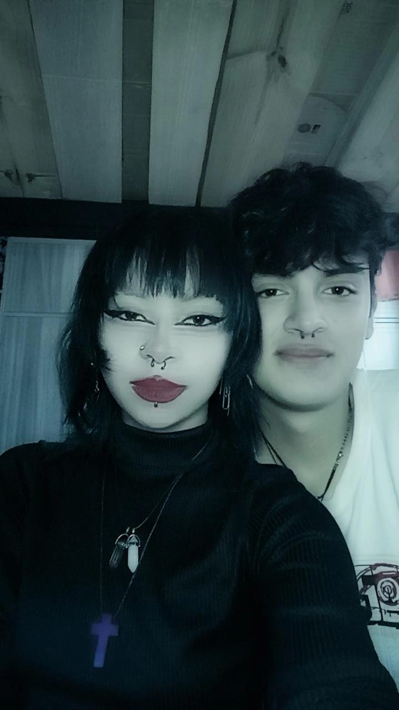
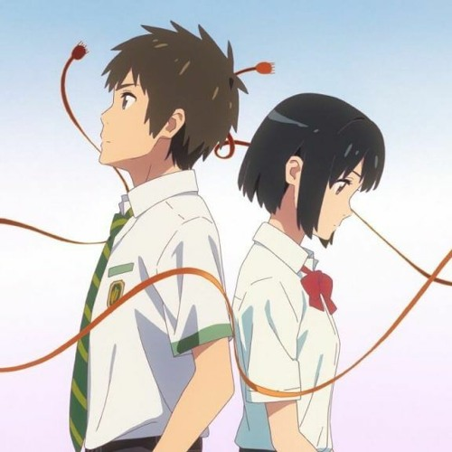
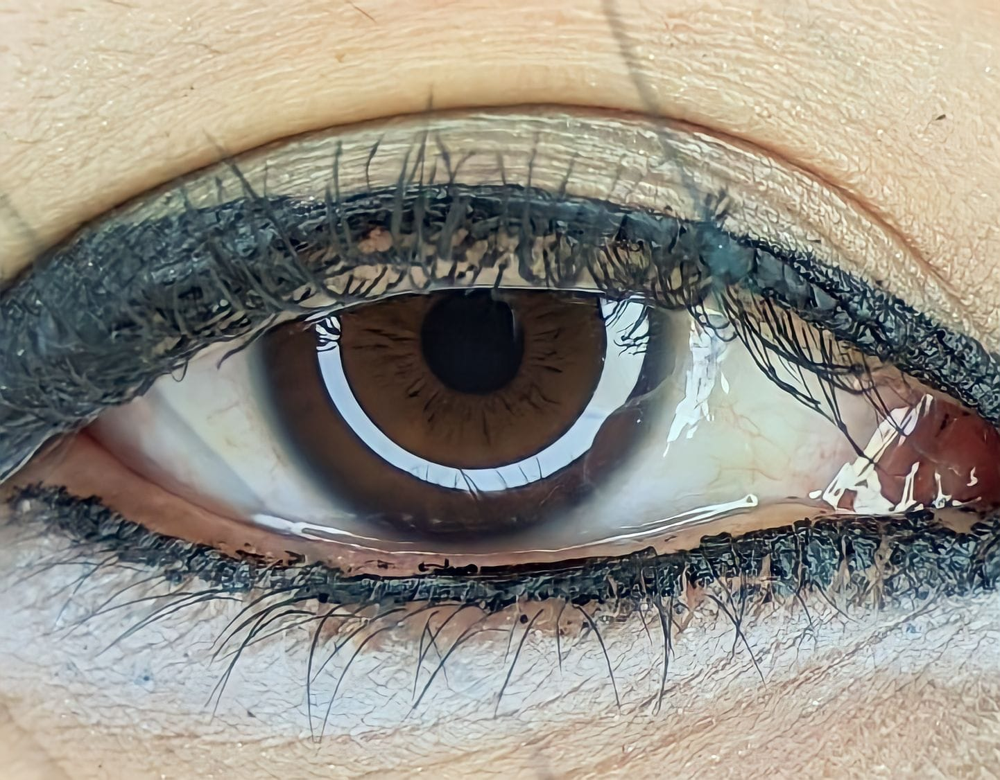
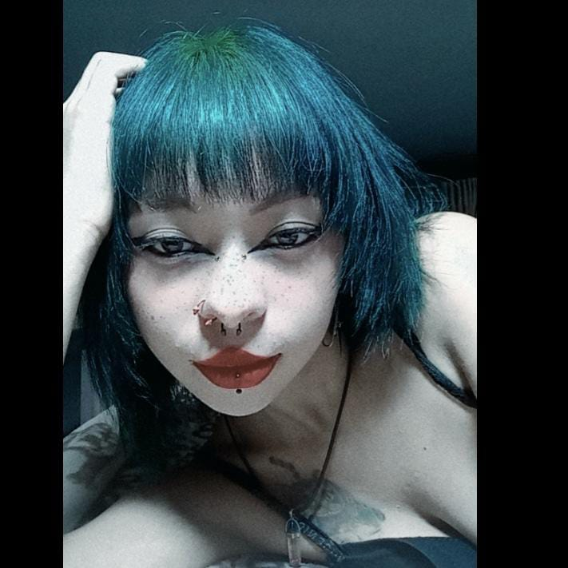

Una historia de amor
Te amo mas que a nada en este mundo, eres el motivo de mi existencia la razon de mi vivir, la persona que me ha demostrado que el amor es algo que si vale la pena y que me ha enseñado a ser mejor y siempre dar lo mejor de mi.


Cuenta una leyenda que cada persona del mundo esta conectada a su alma gemela por medio de un hilo rojo invisible atado a sus meñiques desde el nacimiento, este hilo podra estirarse o enredarse pero jamas romperse <3, no importa cuanta distancia haya entre ellos, ni cuantos obstaculos se interpongan.
La primera vez que vi tus ojos me di de cuenta que nunca me habia sentido tan perdido y a la deriva, se sentia como un lugar calido y tranquilo, asi como cuando esta lloviendo y duermes o ves una pelicula, esa sensacion de tranquilidad y mas que todo, La sensacion de un HOGAR, siendo honesto me sentia y siento como un niño pequeño cuando veo osos ojos, y corro para sentir proteccion y amor

Primera cita como novios
Aun recuerdo nuestra primera cita como una pareja, te recogi en la estacion de transmilenio, ibas con tu vestido blanco, una chaqueta tejida negra y miedo a lo inesperado, estabas nerviosa, se notaba en tu cara, y estoy seguro que cuando me viste no sabias si darme un beso, mientras esperabamos el bus, me regalaste tu gato de peluche uno de tus objetos mas preciados, para que estuviera conmigo siempre, luego nos subimos al bus, veiamos videos en mi celular y un habitante de calle nos dijo que tuvieramos cuidado que la ventana estaba abierta, por eso le dimos una moneda de 1000, llegamos a nuestra reservacion, entramos y pedimos sushi, nunca voy a olvidar tu rostro al momento de tener que comer con palillos fue muy gracioso, luego llego el ramen y creo que se volvio a un mucho mejor, no parabamos de reirnos en intentos de comer con palillos y como olvidar al señor asiatico, fue muy gracioso, cada segundo que pasaba a tu lado me daba felicidad y tranquilidad
Disculpas
Se que he cometido muchos errores, me he equivocado, pero cada error me enseña que debo mejorar y ser una mejor persona para ti, me encanta cuando me hablas y me cuentas que no te sientes bien, la comunicacion que tenemos como pareja es increible, Te pido disculpas por todas las veces que he fallado solo quiero decir, que a diario mejoro para ser una mejor persona para ti
Ya para finalizar esta carta de amor a mi modo, solo me queda agradecerte por aguantarme durante 8 meses, se que no es un trabajo facil jajajaj, realmente solo quiero decirte que cada segundo que paso a tu lado me ayuda a mejorar, me inspira, me motiva eres mi musa, me encanta estar a tu lado, me encanta cuando me abrazas y siento el calor de tu abrazo, cuando me necesitas y vienes a mi para que te apoye, una cosa que nunca en mi vida dejare de hacer, siempre voy a estar para ti, siempre podras contar conmigo, somos un equipo, una pareja, un duo, somos novios, amigos, compañeros, colegas y se que juntos podremos con todo, estos 8 meses que he estado contigo han sido los mejores 8 meses de mi vida, y se han sentido como si fueran 8 semanas, contigo el tiempo pasa tan rapido, que solo deseo que sea el siguiente dia para poderte ver de nuevo y sentir tu abrazo, tus labios y perderme en esos ojos que me encantan. te extraño cada segundo que estoy lejos de ti, quiero verte desde que me despierto y lo primero que veo es un mensaje de buenos dias tuyo, recordandome cuanto me amas y cuanto te amo yo a ti, tu futuro es brillante, tienes talento, eres unica inigualable y se que lograras todo lo que quieras, siempre, sin mas, me despido de esta carta con un gran

A